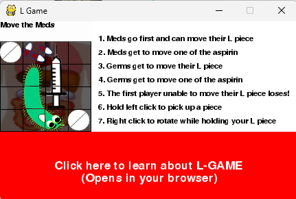

Meds vs Germs
For the Global Game Jam 2018, I developed a digital version of this classic. The theme of the jam was "Transmission", which I interpreted as a battle for control of a biological system. In my version, players take on the role of either Meds or Germs, battling to occupy the body (the board). The neutral pieces became "antibodies" or blockers that could be strategically moved to transmit control across the grid.